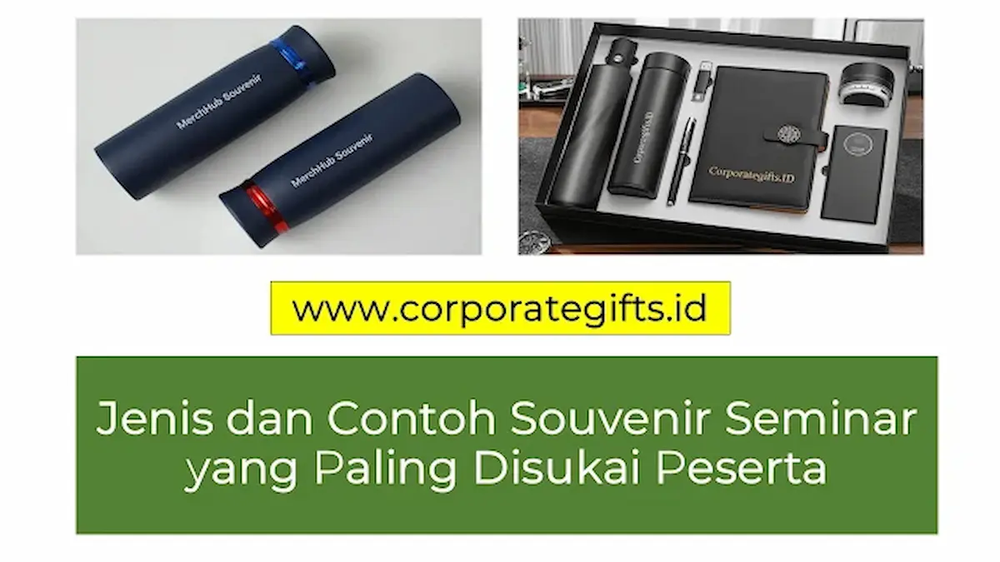

Corporate Gifts ID - Dalam setiap penyelenggaraan agenda seminar, lokakarya bisnis, maupun simposium ilmiah, kehadiran cinderamata bukan sekadar tradisi pelengkap di meja registrasi. Souvenir seminar adalah media komunikasi berwujud fisik yang merepresentasikan kesiapan panitia, menghargai waktu yang diluangkan oleh para hadirin, sekaligus mengabadikan pesan merek penyelenggara ke dalam memori jangka panjang para peserta.
Poin Kunci Keberhasilan Souvenir Seminar:
- Utilitas Praktis Teruji: Barang yang langsung dipakai selama sesi seminar (seperti buku catatan dan pulpen) memiliki retensi penerimaan tertinggi.
- Efektivitas Anggaran Berimbang: Mengoptimalkan biaya per peserta (cost per attendee) dengan memilih vendor produsen langsung.
- Konsistensi Identitas Visual: Penerapan warna merek (brand guidelines) dan logo yang jelas pada setiap permukaan suvenir.
- Dukungan Terhadap Keberlanjutan Lingkungan: Beralih ke produk ramah lingkungan (eco-friendly) seperti botol minum pakai ulang dan tas jinjing kanvas serat alami.
Mengapa Pemilihan Souvenir Seminar Menentukan Keberhasilan Acara?
Mengalokasikan anggaran untuk suvenir seminar memberikan tiga dampak strategis yang nyata bagi kredibilitas organisasi penyelenggara:
- Meningkatkan Brand Awareness Berkelanjutan: Suvenir bermutu yang dibawa pulang akan terus digunakan di kantor, kampus, atau ruang publik, menghasilkan paparan merek organik secara berulang tanpa biaya iklan tambahan.
- Menciptakan Kesan Positif & Apresiasi Tulus: Peserta merasa dihormati ketika menerima perlengkapan seminar yang tertata rapi dan berkualitas baik, meningkatkan kepuasan terhadap jalannya acara secara menyeluruh.
- Menegaskan Standar Profesionalisme Acara: Keseragaman kemasan dan kerapian merchandise mencerminkan kredibilitas institusi yang terorganisir dengan matang dan profesional.
6 Jenis Souvenir Seminar yang Paling Banyak Disukai Peserta
Berdasarkan preferensi ribuan peserta seminar korporat dan akademis di Indonesia, berikut enam kategori produk yang terbukti memiliki tingkat kepuasan penggunaan paling tinggi:
1. Tumbler Stainless Steel Insulasi Suhu
Botol minum tahan suhu panas dan dingin menjadi primadona suvenir seminar modern. Selain mendukung kampanye pengurangan sampah plastik sekali pakai di area konferensi, tumbler berbahan stainless steel SUS304 food grade memiliki nilai guna bertahun-tahun di meja kerja maupun saat berolahraga.
2. Totebag Kanvas & Blacu Tebal Multifungsi
Tas jinjing kain berfungsi ganda: sebagai wadah pembawa dokumen dan modul materi selama acara berlangsung, sekaligus tas belanja serbaguna untuk rutinitas harian peserta. Bahan kanvas tebal dengan jahitan kuat dan sablon presisi memberikan kesan artistik yang ramah lingkungan.
3. Notebook Hardcover Custom & Agenda Kerja
Dalam seminar edukatif atau bisnis, peserta membutuhkan media cepat untuk mencatat wawasan penting dari narasumber. Buku catatan bersampul kokoh (hardcover) dengan lembar bergaris, pita pembatas buku, serta saku dokumen di halaman belakang menjadi suvenir esensial yang tak lekang oleh waktu.
4. Pulpen Eksklusif Berbodi Logam
Meskipun berukuran ringkas, pulpen eksklusif dan alat tulis premium berbodi metal menghadirkan impresi mewah saat dipegang. Tinta gel berkualitas tinggi yang tidak macet memastikan pengalaman menulis peserta tetap nyaman sepanjang seminar.
5. Flashdisk Kartu & OTG Custom Logo
Perangkat penyimpan data portabel berbentuk kartu nama tipis atau flashdisk dual-connector (USB & Type-C OTG) sangat fungsional. Panitia dapat langsung mengisi file modul presentasi, e-certificate, serta video profil perusahaan ke dalam flashdisk sebelum dibagikan.
6. Paket Seminar Kit Terpadu (All-in-One Package)
Menggabungkan beberapa item esensial ke dalam satu kemasan rapi, seperti kombinasi totebag, notebook, pulpen, lanyard tanda pengenal (ID card), dan gantungan kunci custom. Solusi ini memberikan impresi perhelatan yang sangat profesional dan tertata sempurna.
Tabel Segmentasi dan Komparasi Souvenir Berdasarkan Jenis Acara
Tabel berikut merangkum panduan penentuan komposisi suvenir berdasarkan karakteristik acara, segmentasi audiens, serta sasaran anggarannya:
| Kategori Acara | Target Peserta | Rekomendasi Komposisi Souvenir | Nilai Manfaat Utama |
|---|---|---|---|
| Corporate B2B Seminar | Mitra bisnis, klien potensial, perwakilan instansi | Tumbler vakum laser logo, flashdisk OTG kartu, leather notebook | Memperkuat citra korporasi yang mapan dan berwibawa |
| Seminar Pendidikan & Kampus | Mahasiswa, dosen, peneliti, peserta pelatihan | Notebook spiral, pulpen promosi, totebag blacu, stiker vinyl | Mendukung kegiatan belajar aktif dengan biaya per unit yang efisien |
| Seminar Komunitas & ESG | Aktivis sosial, penggiat lingkungan, masyarakat umum | Totebag kanvas daur ulang, botol kaca/bambu, sedotan stainless | Menegaskan komitmen kepedulian lingkungan secara nyata |
| Executive Masterclass (VIP) | Pimpinan eksekutif, manajer senior, narasumber ahli | Seminar kit eksklusif, power bank metalik, pena grafir laser | Memberikan penghormatan tertinggi kepada peserta berprofil tinggi |

Pengemasan serasi antara totebag, notebook, dan pulpen custom menciptakan antusiasme tinggi saat peserta melakukan registrasi.
Panduan Praktis Memilih dan Memesan Souvenir Seminar Bebas Kendala
Agar pengadaan suvenir seminar berjalan tepat waktu tanpa hambatan teknis, ikuti checklist praktis berikut:
- Analisis Demografi Peserta: Sesuaikan pilihan produk dengan rentang usia, profesi, dan minat utama peserta seminar Anda.
- Tentukan Estimasi Anggaran (Cost per Attendee): Hitung rasio alokasi biaya cinderamata terhadap total biaya registrasi atau anggaran kepanitiaan.
- Pastikan Kualitas Proofing Cetak: Selalu minta pratinjau digital mockup atau sampel fisik dummy untuk memastikan keakuratan logo dan tipografi sebelum proses cetak massal dimulai.
- Pesan 2 hingga 3 Pekan Lebih Awal: Mengantisipasi antrean produksi vendor serta proses pengiriman kargo, khususnya jika lokasi acara berada di luar kota operasional vendor.
- Bekerja Sama dengan Vendor Terpercaya: Percayakan pesanan Anda kepada vendor berpengalaman seperti CorporateGifts.ID yang menjamin garansi mutu dan ketepatan jadwal pengiriman.
Pertanyaan Seputar Souvenir Seminar Profesional (FAQ)
Kesimpulan dan Solusi Pengadaan Bersama Tim Desain
Souvenir seminar yang dipilih dengan cermat terbukti menjadi katalisator kuat untuk meningkatkan mutu persepsi acara di mata peserta. Menggabungkan item fungsional seperti tumbler, tote bag, notebook, dan pulpen metal menghadirkan apresiasi tulus sekaligus mengalirkan promosi merek korporasi secara konsisten.
Konsultasikan kebutuhan paket seminar kit dan souvenir acara Anda bersama tim ahli di CorporateGifts.ID. Kami siap membantu pembuatan desain mockup gratis, pemilihan variasi item sesuai budget, serta jaminan pengiriman tepat waktu untuk kesuksesan agenda Anda.

Ditulis oleh: Sholikhatun Nikmah
Creative Product Designer & Bespoke Packaging ConsultantDesainer produk dan konsultan pengemasan eksklusif di CorporateGifts.ID. Berpengalaman lebih dari 8 tahun dalam tata letak suvenir seminar nasional, perancangan tote bag kanvas custom, serta pemilihan kombinasi seminar kit fungsional untuk instansi dan korporasi.
Lihat Profil Lengkap & Panduan Lainnya